Reflections on my Jawun Secondment
“It’s not basic, it’s foundational.” This statement truly summarises my time at the South West Aboriginal Medical Service (SWAMS). My transformative six-week Jawun Secondment was an experience that has profoundly solidified my belief that relationships, trust, and human skills are absolutely crucial for data professionals.
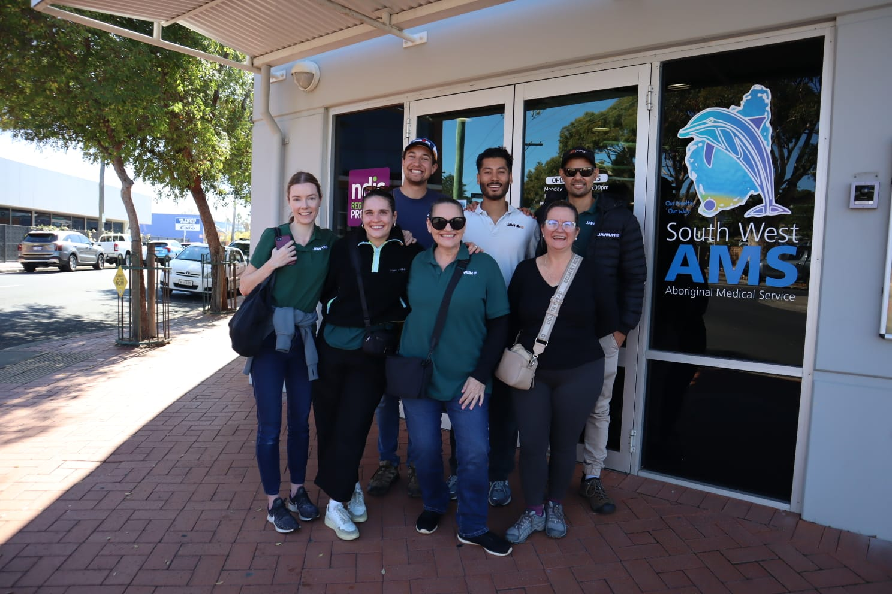
What is the Jawun Secondment Program?
Jawun is a unique program that partners corporate, government, and not-for-profit organisations with Indigenous communities and organisations across Australia. It’s all about bringing specific skills and expertise to where they’re most needed, to support Indigenous-led initiatives and goals. I had the incredible opportunity to step away from my usual data analysis/data science role and immerse myself in one of these partnerships.
Cultural Immersion: Listening and Learning on Country
The first week of any Jawun secondment is dedicated to cultural immersion, and honestly, it’s designed to slow things down, be a sponge and soak up all the deep listening. It was a whirlwind of learning, listening, and experiencing - connecting with Country. We began week one at South West Aboriginal Land and Sea Council doing some general Jawun induction and learning more about Noongar Boodja Country. More learning continued at the incredible WA Museum Boola Bardip, where the exhibits powerfully articulate the rich history, resilience, and ongoing connection to Country of Noongar people.
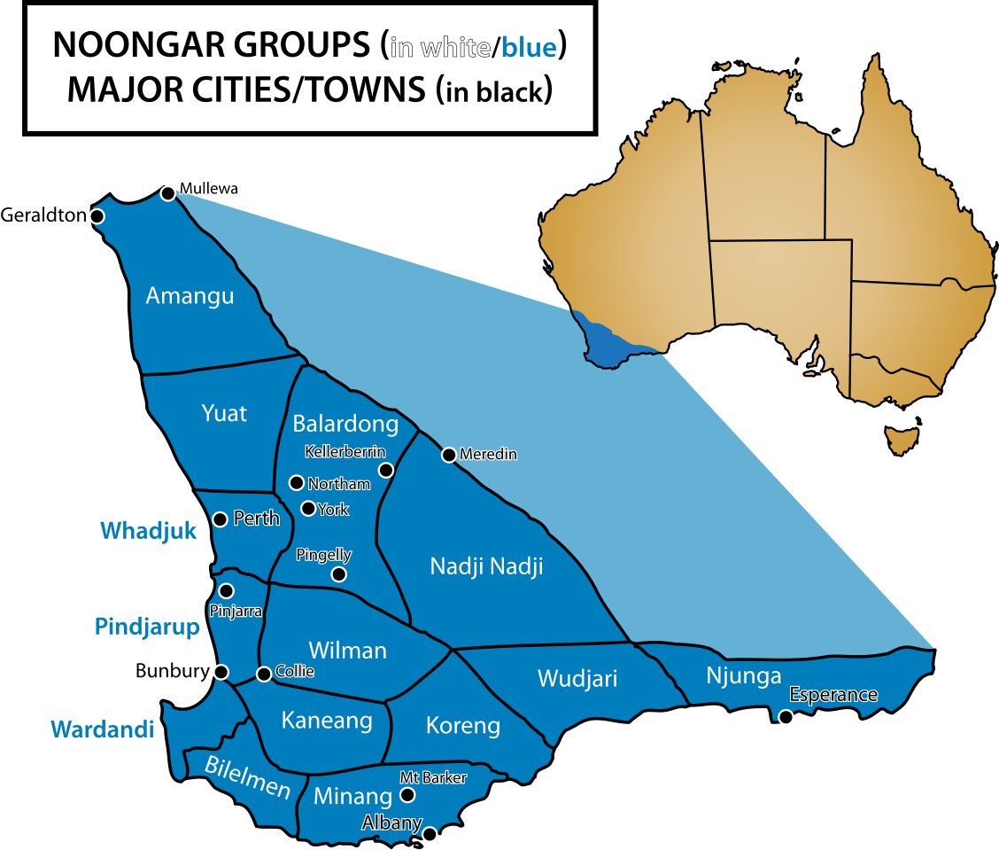
We then visited several local Indigenous organisations1. Seeing firsthand the incredible work being done on the ground – the holistic approaches to delivering culturally appropriate healthcare and support – was truly inspiring.
1 Derbarl Yerrigan Health Service, Moorditj Koort, and Boola Bidi (Harvey Aboriginal Corporation)
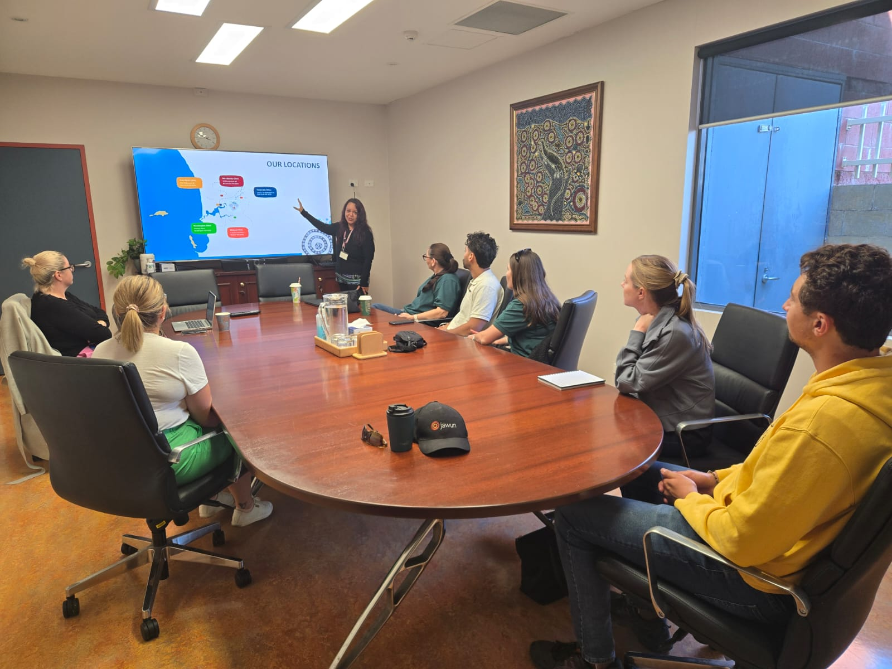
Perhaps one of the most profound parts of the immersion was spending two nights camping in swags at Roelands Village, a former Aboriginal mission for Stolen Generation children2. Being on that land, hearing the stories shared by Syd Jackson and community members, was very special. It was a stark reminder of resilience, healing, and the ongoing impact of historical, colonial policies3.
2 The Stolen Generations refers to the Aboriginal and Torres Strait Islander children who were forcibly removed from their families by Australian government agencies and church missions between the 1910s and 1970s.
3 Syd’s story is truly incredible, I highly suggest reading his story
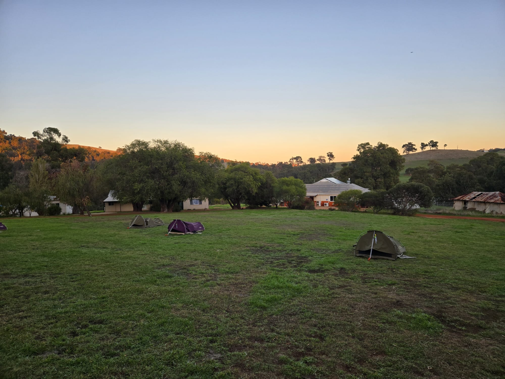
We also explored the artistic and spiritual dimensions of the region, visiting the breathtaking Wellington Dam mural. Week one wasn’t just about absorbing information; it was about truly connecting and building deep respect for the communities we’d be working with.
This deep dive into culture and community was reinforced in our third week, where we spent the day experiencing the Ngligi Caves with Koomal Dreaming. We learnt about Aboriginal bushcraft and about the Noongar seasonal calendar focusing on six Noongar seasons4, instead of the western/european four seasons! These experiences deepened my understanding of traditional bushcraft and respect for Country.
4 The six Noongar seasons are Birak, Bunuru, Djeran, Makuru, Djilba, and Kambarang. Each corresponds to specific environmental and weather patterns, influencing traditional food gathering and land management.
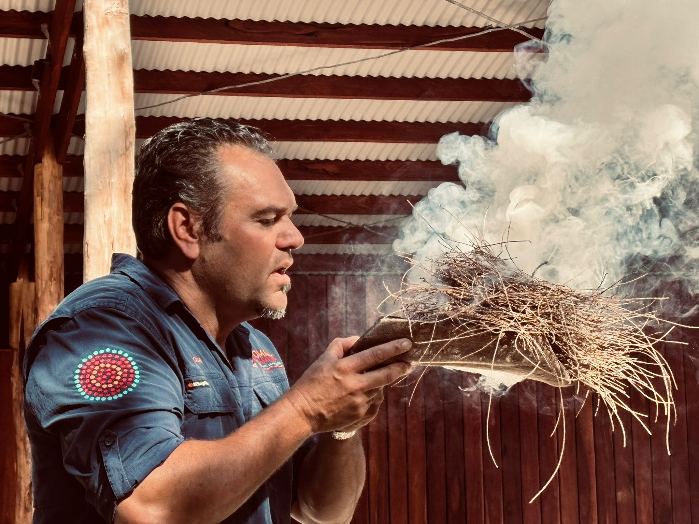
The Pivot: Shifting from a Technical Plan to a Human-Centred Approach
After that intense and invaluable first week, it was time to put our skills to work. I was incredibly fortunate to be placed with SWAMS in Bunbury. SWAMS is a vital organisation providing holistic health services to Aboriginal people across Noongar Boodja. My initial project brief was to help them establish a unified organisational data model5.
5 I had never heard this term before. It’s basically a single source of truth for an organisation’s data.
My approach was to start having conversations with everyone in the team. Learn their pain points, listen to their stories. I found this created a good foundational relationship and trust. However, the more and more I learned about the team, the more I realised that a unified organisational data model was probably inappropriate for their current data maturity. This lead me to focus on establishing a data management and data governance policies.
A lot of this adjustment in approach was guided through conversations with previous work colleagues from ACT Health and current work colleagues back at Jobs and Skills Australia. This was about more than just networking; it was about empowering the SWAMS team by showing them a broader community willing to share knowledge, validating their challenges, and providing insights into how other organisations tackle similar data problems. I’m super grateful for this human-approach to problem-solving6, as this lead me to adjust my project brief.
6 Or more accurately, problem-identifying.
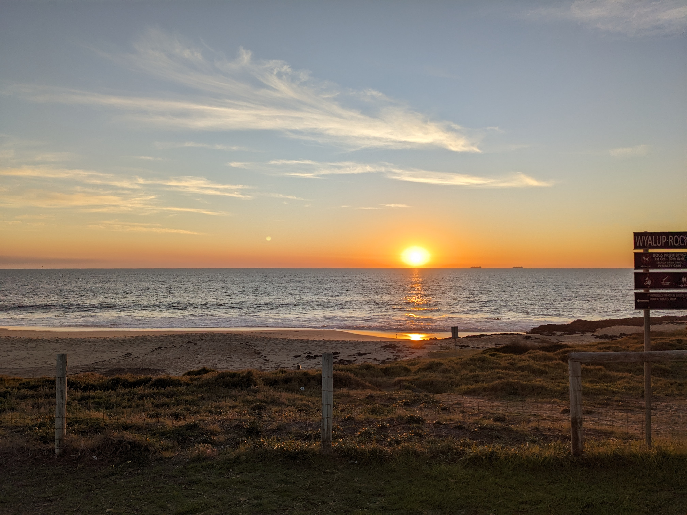
Co-Designing the Foundation
My five weeks with SWAMS were focused on helping them build stronger foundations in their data capabilities. It wasn’t about quick fixes; it was about co-designing sustainable solutions that would empower them long after I left. Here’s a rundown of what we managed to achieve together.
Establishing a Data Analytics Service
The cornerstone of my secondment was co-designing the Data Analytics Service Framework. This wasn’t just me ‘building’ a document; it meant plenty of yarning7, deep listening, and iterating with the SWAMS team to ensure it genuinely met their unique needs. The framework defined:
7 In an Aboriginal context, ‘yarning’ is more than just a chat. It’s a culturally prescribed, collaborative form of dialogue used for storytelling, learning, and building relationships.
- Scope (Why?): What data analytics could and should be done, and crucially, why it mattered for their mission.
- Work Plan (What?): A clear roadmap of specific data analytics activities and projects they could undertake.
- Service Charter (How?): Guidelines for how the data analytics service would operate, ensuring clarity and consistency.
This framework is a powerful strategic tool. It’s helped SWAMS gain immense strategic clarity by defining responsibilities, enabling a shared understanding of data across the organisation, and supporting more sustainable resource allocation. Now, everyone has a clearer picture of who does what, making data work more efficient and impactful.
Data Roadmap
The roadmap we developed isn’t a rigid plan, but more like a compass – a guide for SWAMS to navigate their journey towards better data practices and maturity over time8. It helps them prioritise where to focus their efforts. The roadmap follows the Data Management Body of Knowledge (DAMA-DMBOK) structure, which helped categorise my recommendations9.
8 Candidly, the roadmap became a document containing everything I wanted to do but didn’t have time for. It was intentionally left rough to allow for flexibility.
9 The three essential pillars I focused on were People (Data Culture), Processes (Data Management), and Technology (Tools).
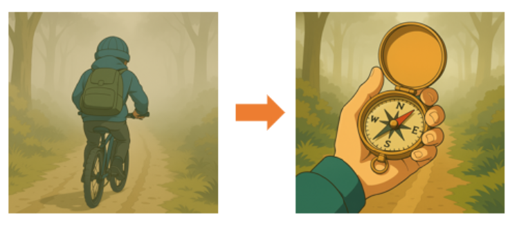
Enhancing Data Capability
Knowing that building internal capability was key, I led a series of capability workshops on Reproducible Data Workflows in R. This wasn’t just about teaching code; it was about empowering the team to conduct their analysis in a way that is transparent, verifiable, and easily repeatable. We talked about everything from basic R functions to the importance of reproducibility. This session really started from the groundup and was aimed as a spark of inspiration for the team to improve their processes.
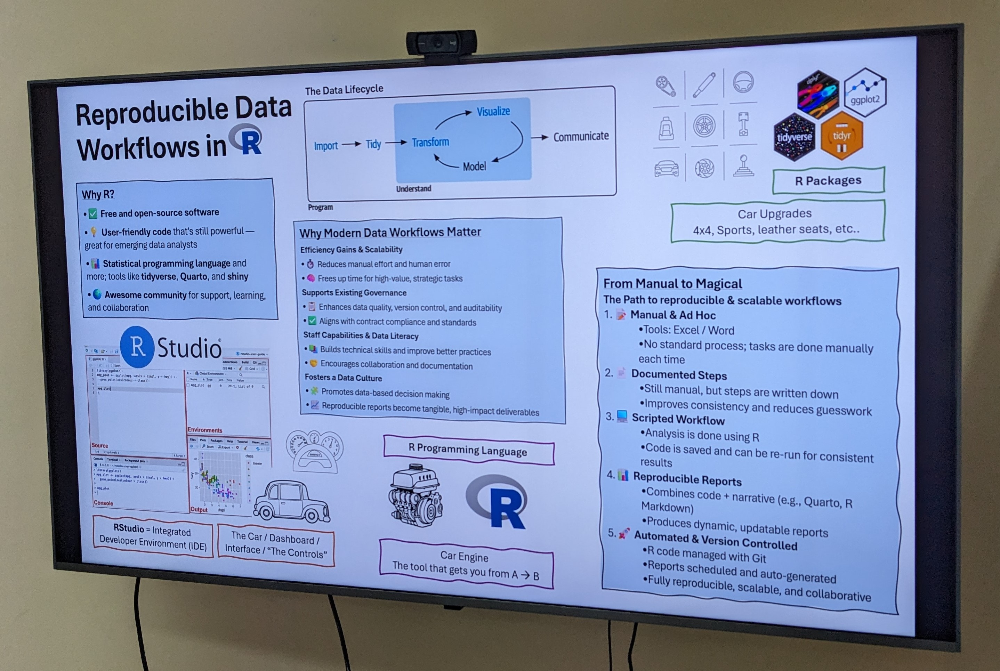
Next Steps: Sustaining the Momentum
The secondment might be over, but the work of building strong data foundations at SWAMS continues. We laid the groundwork, and now it’s about nurturing that growth:
- Embed & Socialise the Service Framework: This framework needs to become part of SWAMS’ daily operations.
- Use the Data Roadmap as a compass: Guiding them towards continuous ‘better practice.’
- Continue learning to implement reproducible workflows: Ensuring ongoing data quality and efficiency.
- Formalise Data Management & Governance: Strengthening integrity, security, and compliance.
- Champion Data Culture and Data Literacy: Creating an environment where everyone understands and appreciates the potential value of data.
What the Secondment Meant to Me: Personal Reflections
This secondment wasn’t just about delivering projects; it was a profound experience of personal and professional growth. It’s tricky to quantify the full impact of these six weeks. So much of the value lies not in a final report, but in the ripple effect of new ideas, the spark of empowerment in my colleagues, and the slow, steady work of building trust. The real impact will reveal itself over time, but the impact on me is already crystal clear.
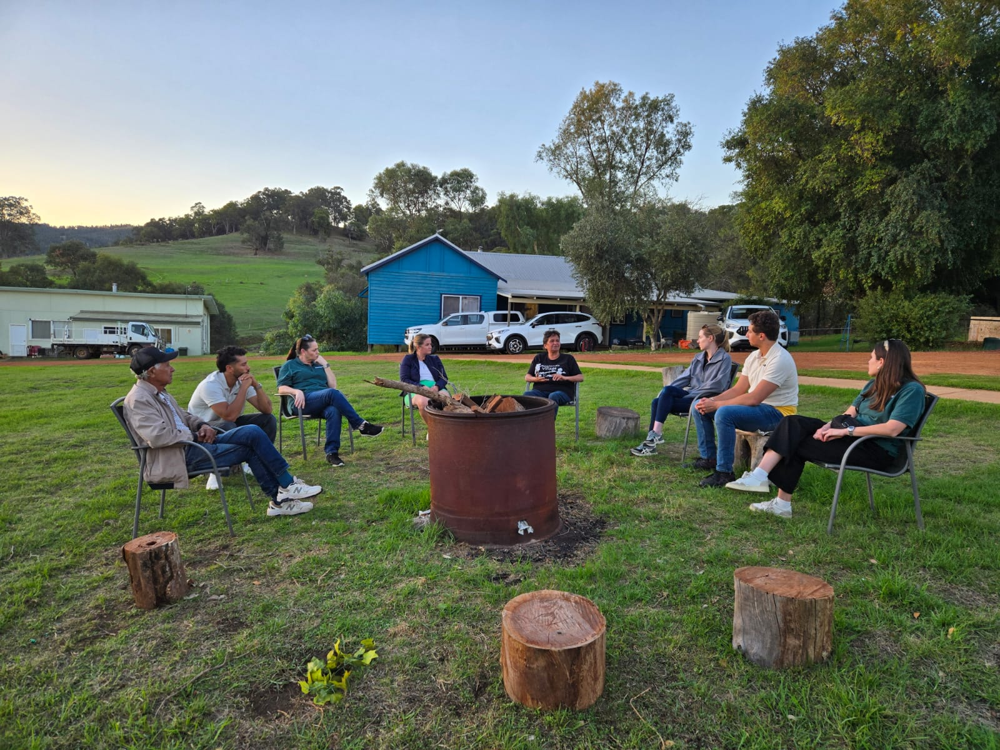
The Unshakeable Power of Relationships & Trust
The co-design process truly highlighted the power of collaboration. My approach was to sit and listen, to understand their challenges from their perspective, and to build genuine relationships. This had major dividends in the later half of my secondment, in turn leading to easy buy-in for the frameworks and workshops I was introducing. I know I built effective relationships with leaders like Aneliese and Devin, who proactively checked in with me, shared stories about work and outside of work. It wasn’t just a consultation; it was a true partnership.
This trust created moments of true skills transfer. When my colleague Keely came to me with an Excel question, I helped her debug and find a solution. But more importantly, I was able to show her how I troubleshoot and my methods for problem-solving. That moment of shared learning was only possible because a foundation of rapport and trust had already been built.
Combatting My Imposter Syndrome & Building Self-Confidence
This secondment was a huge personal victory against my own imposter syndrome. In my regular role, surrounded by equally skilled data professionals, it’s easy to feel like you’re just one cog in a very smart machine. But here, in a different context, I realised: “Yes, I do have relevant skills, and I can add significant value. People genuinely value my contributions and my way of thinking.” That was a powerful ‘aha!’ moment for me.
Shifting Mindsets: From ‘Best’ to ‘Better’ Practice
My usual work environment operates at a relatively high level of data maturity. Being at SWAMS gave me invaluable insight into organisations at earlier stages of their data journey and forced me to re-evaluate what ‘best practice’ truly means. I quickly saw that many organisations, regardless of size or sector, grapple with similar data challenges—a powerful reminder that “you’re not alone” in the data struggle.
This led to a key personal learning: my mindset shifted from chasing ‘best practice’ to embracing ‘better practice.’ It’s about continuous improvement and finding what works for that specific organisation in their context, rather than imposing a one-size-fits-all ideal. Sometimes, the most sophisticated solutions aren’t the best. A simple Excel spreadsheet, used effectively, can do wonders and be transformative for an organisation just starting its data maturity journey. This is precisely why ‘It’s not basic, it’s foundational’ fits so well – what might seem simple to me could be a game-changer for others.
Early Career Leadership Development
My usual role is heavily technical – deep in the code, building dashboards, and automating reports. But these past six weeks were incredibly strategic and tactical. I wasn’t just executing; I was applying strategic thinking, problem-solving at a higher level, and guiding conversations to shape future directions. This was a fantastic opportunity for early career leadership development, pushing me into a more advisory leadership role.
Empowering Leadership: People Over Tools
This secondment reinforced a core belief of mine: while I’m passionate about data tools and technologies, I care more deeply about people. My role wasn’t just to implement software; it was to empower individuals, to build their confidence, and to spark their own curiosity and capability. It’s not about doing the work for them; it’s about igniting that internal ‘flame’ so they can continue to grow and tackle their own data challenges independently.
Acknowledging the Foundational Nature of the Work
I sometimes feel like I haven’t done anything huge, but then I take a step back and reflect. It may seem like it’s been relatively slow, but at least we’re moving in the right direction (at least we have a direction now!). In six weeks, you don’t build a skyscraper. You lay the concrete slab, you dig the footings, you ensure the ground is stable. It might not look ‘big’ on the surface, but it’s absolutely essential for whatever comes next.
No journey like this is taken alone. I want to extend my deepest gratitude to everyone who made this experience so impactful.
- To the entire South West Aboriginal Medical Service (SWAMS) team – thank you for welcoming me, for your trust, and for your incredible dedication to your community. It was an honor to work alongside you.
- To the Jawun program – thank you for creating these invaluable opportunities for growth, learning, and connection.
- To my colleagues Jakob, David, Imran, and Matt – thank you for your support, valuable advice, and for indulging my ‘nerd chats’ from afar.
- Special thanks to Devin and Aneliese at SWAMS for their leadership, openness, and for trusting me with such important work. Your partnership made all the difference. I look forward to hearing about all the future progress with your team!
- And to Aaron, for being an awesome support/sounding board. I look forward to our future phone call chats!
This secondment has truly been a journey of not just doing, but of being – deeply listening, building trust, and contributing to foundations that will (hopefully) empower for years to come.
Yanga10.
10 ‘Yanga’ is the Noongar word for ‘thank you’ or ‘acknowledgement’.
Appendix Photos
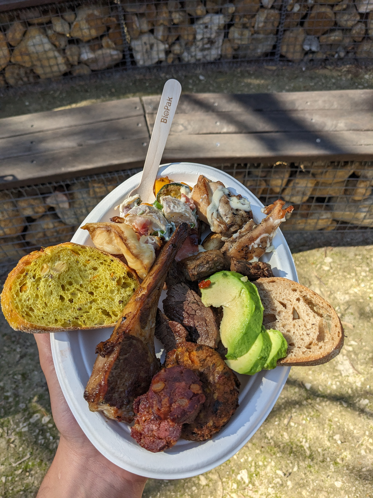
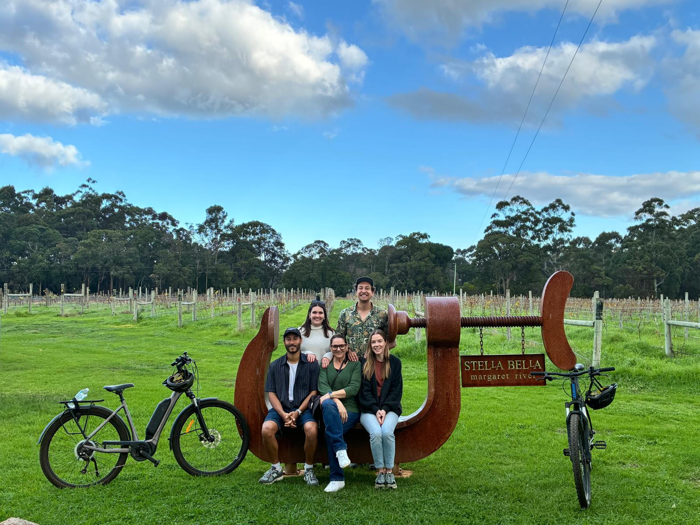
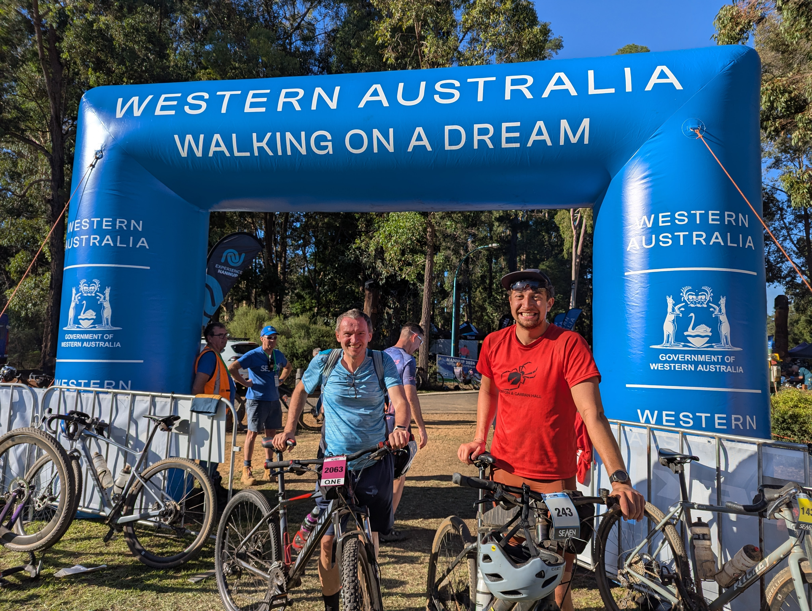